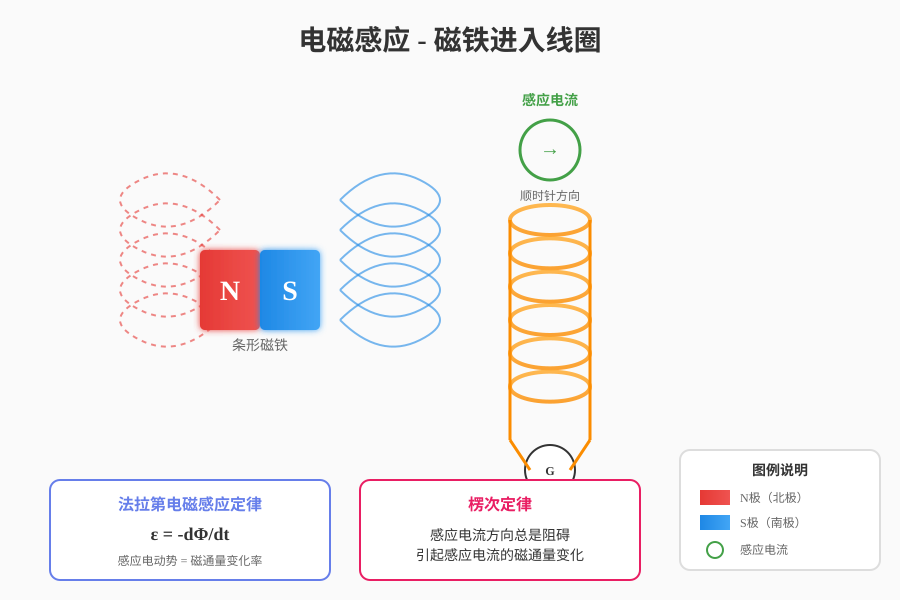
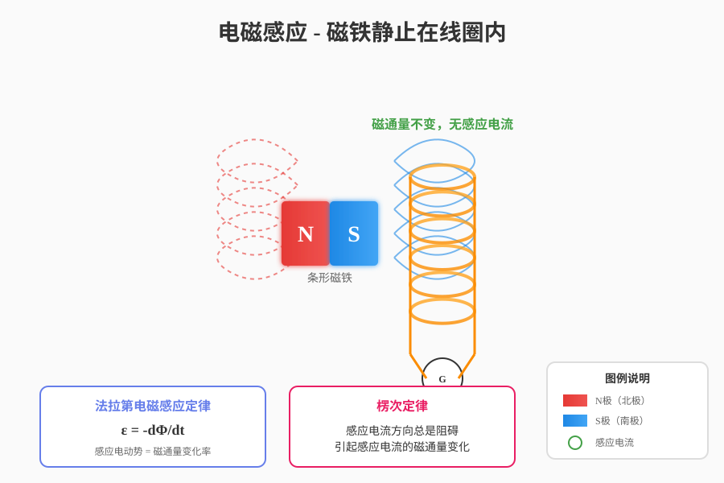
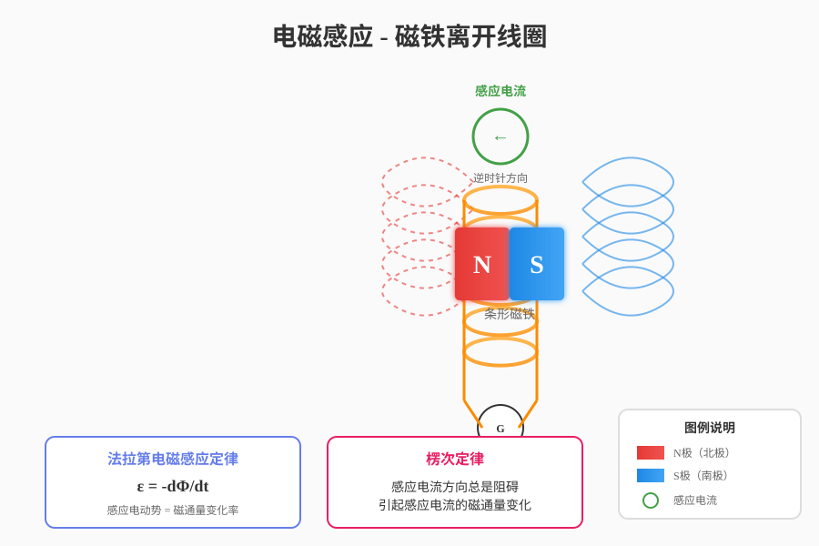

展示模板驱动方案如何处理复杂物理场景
电磁感应包含：磁铁、线圈、磁场线、电流方向、公式等关键元素
LLM只需要输出这些参数：
模板引擎根据参数生成精美的SVG：



| 参数 | 场景1（进入） | 场景2（静止） | 场景3（离开） |
|---|---|---|---|
| magnet_position | "entering" | "inside" | "leaving" |
| coil_turns | 6 | 6 | 6 |
| 电流方向 | 顺时针 | 无 | 逆时针 |
| 磁通量变化 | 增加 ↑ | 不变 — | 减少 ↓ |
关键点：只需修改一个参数 magnet_position，就能生成完全不同的物理场景图片，
且保证物理原理的准确性！
一个参数控制整个场景，LLM负担极轻
电流方向、磁场分布符合物理定律
渐变、动画、发光，媲美专业软件
自动添加公式框、图例说明
新增场景只需扩展参数范围
修改模板即可全局更新所有图片